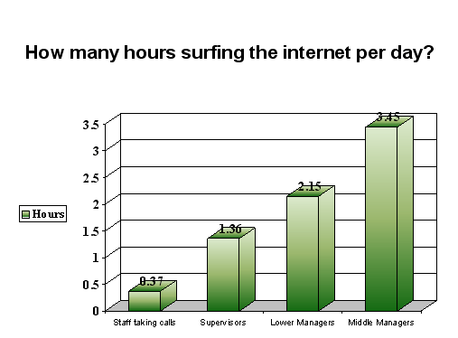
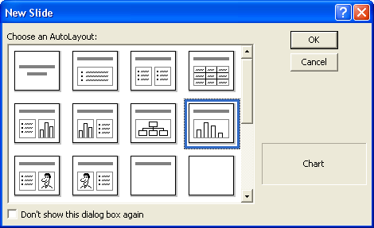
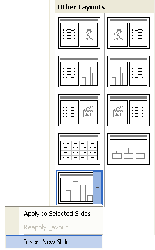
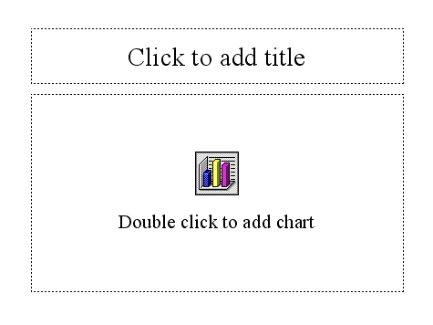

Free
powerpoint
Tutorials
|
Free
powerpoint
Tutorials
|
|
 home home |
Stay at Home and Learn | ||||
3D Bar Graphs in PowerPoint |
|||||
|
Charts 1, 2, 3, 4, 5, 6, 7, 8, 9, 10, 11, 12 Flow Charts Tables
For slide two in our presentation, we have a 3D bar graph. The slide you're now going to create looks like this:  The slide is all about how many hours per day employees spend surfing the internet. Four employee groups have been monitored: Staff Taking Calls When you're creating charts for PowerPoint presentations, they should
be as simple and as clear as you can make them. A mistake is to clutter
the chart up with too much information. You don't want to alienate you
audience by showing then a complex chart that looks impossible to interpret.
Our chart asks a question in the Title area, and answers it with a simple
3D bar chart. It's clear from the slide that Middle Managers are spending
too much time surfing the internet! So, click Insert > New Slide, just as you did before. For PowerPoint 2000 users, select Chart from the dialogue box, as in the image below:  For PowerPoint 20003, scroll down to the bottom of the Task Pane and locate the Title and Graph template, as in this image:  Click the arrow on the chart template, and select Insert New Slide from the menu. Users of all versions should then see the following appear on the main PowerPoint stage:  In later lessons, you'll see other ways to insert a chart. But click inside the Title bar at the top and enter this text: How many hours surfing the internet per day? The font we used was Arial, and the size was 28. When you've added the Title at the top, click below for the next lesson, which is how to get the data for your chart.
|
||||